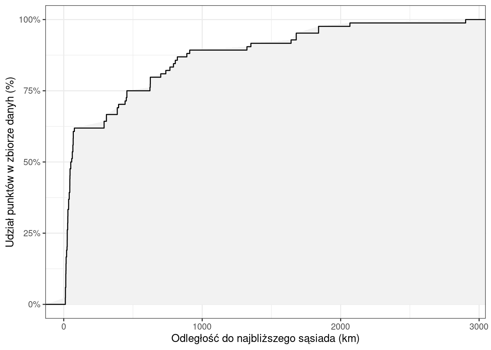

library(spatstat)
library(sf)6 Metody oparte na odległości
Metody oparte na odległości wykorzystują informację o odległości między każdą lokalizacją pomiaru/obserwacji, a najbliższym innym pomiarem/obserwacją.
6.1 Statystyki najbliższego sąsiada
Statystyki najbliższego sąsiada wykorzystywane są do określenia rozkładu odległości pomiędzy każdą lokalizacją pomiaru/obserwacji, a najbliższym innym pomiarem/obserwacją.
6.2 Wskaźnik Clarka-Evansa
Wskaźnik Clarka-Evansa (1954) określa stosunek między rzeczywistą średnią odległością od najbliższego sąsiada, a oczekiwaną dla rozkładu losowego.
- Wartości niższe od 1 wskazują na występowanie skupień punktów
- Wartość równa 1 wskazuje na losowy rozkład punktów
- Wartości wyższe od 1 wskazują na bardziej regularny ich rozkład (np., dla regularnej siatki heksagonalnej wartość wskaźnika wynosi 2,15)
6.3 Funkcje podsumowujące G, K Ripley’a
funkcja G - podsumowuje rozkład odległości do najbliższego sąsiada w postaci dystrybuanty, wykorzystywana do porównania odległości teoretycznych wynikających z losowego rozkładu punktów z odległościami empirycznymi obliczonymi na podstawie danych.
funkcja K Ripley’a - wykorzystywana do porównania odległości teoretycznych wynikających z losowego rozkładu punktów z odległościami empirycznymi obliczonymi na podstawie danych.
6.4 Metody oparte na odległości w R
Pakiet spatstat() dostarcza kilku funkcji pozwalających na wykorzystanie metod opartych na odległości do analizy rozkładu przestrzennego punktów.
pairdist()- zwraca macierz z odległościami między wszystkimi parami punktów w zbiorze danychnndist()- zwraca wektor odległości od punktu do najbliżego sąsiada; odległości te są uzyskiwane przez sortowanie odległości między parami punktów i wybierana jest minimalna wartości dla każdego punktudistmap()- oblicza odległość od każdej komórki do najbliższego punktu i zwraca mapę rastrową.clarkevans()- obliczenie wskaźnika Clarka-EvansaGest()- obliczenie funkcji GKest()- obliczenie funkcji Kenvelope()- estowania hipotezy zerowej dla funkcji G, K
Wykorzystanie funkcji z pakietu spatstat wymaga najpierw przekształcenia danych do obiektu klasy ppp (plannar point pattern).
- funkcja
ppp()jest używana do tworzenia obiektu punktowego klasy ppp na podstawie ramki danych zawierającej współrzędne x oraz y. - funkcja
as.ppp()pozwala na przekształcenie obiektu przestrzennego do klasy ppp
6.5 Przykład 1: Przestępczość w Poznaniu
W przykładzie 1 wykorzystano dane dotyczące przestępczości w Poznaniu (plik przestepstwa_2019.gpkg) wraz z granicą miasta Poznania (plik pzn_borders.gpkg). Do podsumowania rozkładu przestępczości wykorzystano statystyki centrograficzne. Plik przestepstwa_2019.gpkg zawiera tylko kolumnę geom bez dodatkowych atrybutów.
library(sf)
# dane punktowe
p2019 = read_sf("data/przestepstwa_2019.gpkg")
#granica miasta Poznań
pzn = read_sf("data/pzn_borders.gpkg")library(tmap)
tm_shape(pzn) +
tm_borders() +
tm_shape(p2019) +
tm_dots()
Wykorzystanie funkcji z pakietu spatstat wymaga najpierw przekształcenia danych do obiektu klasy ppp. W tym celu wykorzystuje się funkcję as.ppp(), która pozwala na przekształcenie obiektu przestrzennego do klasy ppp.
library(spatstat)
p2019_ppp = as.ppp(st_geometry(p2019))6.5.1 Statystyki najbliższego sąsiada
6.5.1.1 Obliczenie odległości między punktami
Wyliczenie statystyk najbliższego sąsiada wymaga obliczenia odległości między punktami. Pakiet spatstat dostarcza 3 funkcje do obliczania odległości euklidesowych:
pairdist(): zwraca macierz z odległościami między wszystkimi parami punktów w zbiorze danych.
p2019_pair = pairdist(p2019_ppp)
p2019_pair[1:5, 1:5] [,1] [,2] [,3] [,4] [,5]
[1,] 0.0000 345.3003 2862.262 8306.265 412.9845
[2,] 345.3003 0.0000 2857.224 8607.106 389.4981
[3,] 2862.2616 2857.2245 0.000 7522.023 3215.6132
[4,] 8306.2651 8607.1061 7522.023 0.000 8662.6305
[5,] 412.9845 389.4981 3215.613 8662.631 0.0000W macierzy wyznaczonej za pomocą funkcji pairdist() pierwszy wiersz zawiera odległości między punktem id = 1 a wszystkimi innymi. Jeśli posortujemy te wartości otrzymamy ciąg od 0 (odległość między punktem 1 i 1 jest równa 0). Druga wartość w tym posortowanym wektorze to odległość do najbliższego sąsiada.
sort(p2019_pair[1,])[1:5][1] 0.00000 42.45441 59.10611 73.24603 137.13290nndist(): zwraca wektor odległości od punktu do najbliżego sąsiada; odległości te są uzyskiwane przez sortowanie odległości między parami punktów i wybierana jest minimalna wartości dla każdego punktu
p2019_nn1 = nndist(p2019_ppp)
p2019_nn1[1:5][1] 42.45441 32.89107 69.73521 56.48927 243.91727Wektor ten można następnie podsumować za pomocą statystyk opisowych otrzymując wartości statystyk najbliższego sąsiada.
distmap()- oblicza odległość od każdej komórki do najbliższego punktu i zwraca mapę rastrową.
plot(distmap(p2019_ppp))6.5.1.2 Analiza statystyk najbliższego sąsiada
Funkcja nndist() dla każdego punktu zwraca odległość do najbliższego punktu - sąsiada. Na tej podstawie możemy obliczyć statystyki opisowe oraz przeanalizować jak rozkładają się te odległości w analizowanym zbiorze danych.
p2019_nn1 = nndist(p2019_ppp)
#przekształcenie na ramkę danych jest potrzebne do wizualizacji wyników z wykorzystaniem pakietu ggplot2
p2019_nn1_df = data.frame(shortest_distance = p2019_nn1)
head(p2019_nn1_df) shortest_distance
1 42.45441
2 32.89107
3 69.73521
4 56.48927
5 243.91727
6 178.30293summary(p2019_nn1) Min. 1st Qu. Median Mean 3rd Qu. Max.
2.669 42.324 78.596 122.883 148.820 3045.719 round(quantile(p2019_nn1, probs = seq(0, 1, 0.1)), 2) 0% 10% 20% 30% 40% 50% 60% 70% 80% 90%
2.67 22.39 35.75 47.97 63.84 78.60 100.06 128.50 171.23 250.91
100%
3045.72 Podsumowanie wyników dotyczących statystyk najbliższego sąsiada
- 50% punktów znajduje się w odległości mniejszej lub równiej ok. 79 m od najbliższej próbki
- 90% punktów w odległości mniejszej lub równiej ok. 251 m od najbliższej próbki
Odległości między najbliższymi punktami:
- Minimalna: 3 m
- Maksymalna: 3046 m
- Średnia: 123 m
Rozkład wartości odległości można także przeanalizować za pomocą histogramu.
library(ggplot2)
ggplot(p2019_nn1_df, aes(x = shortest_distance)) +
geom_histogram(binwidth = 100) +
labs(x = "Odległość do najbliższego sąsiada [m]") +
theme_bw()Odległości do najbliższego sąsiada można także przedstawić w postaci dystrybuanty (CDF, cumulative distribution function). Na osi x przedstawiona jest odległość, a na osi y procentowy udział punktów w zbiorze danych. Z wykresu można odczytać, jaki procent punktów ma najbliższego sąsiada w odległości mniejszej lub równej podanej wartości.
# cumulative distribution funcion
## stat_ecdf - oblicza cdf (cumulative distribution funcion)
ggplot(p2019_nn1_df, aes(shortest_distance)) +
stat_ecdf(aes(ymin = 0, ymax = after_stat(y)), geom = "ribbon", fill = "grey95")+
stat_ecdf() +
labs(x = "Odległość do najbliższego sąsiada (m)",
y = "Udział punktów w zbiorze danyh (%)") +
scale_y_continuous(labels = scales::percent) +
theme_bw()6.5.2 Funkcje podsumowujące G oraz K Ripley’a
6.5.2.1 Funkcja G
Funkcje G podsumowuje rozkład odległości do najbliższego sąsiada w postaci dystrybuanty (CDF, cumulative distribution function). Wykorzystywana jest do porównania odległości teoretycznych (\(G_t\)) wynikających z losowego rozkładu punktów z odległościami empirycznymi (\(G_{emp}\)) obliczonymi na podstawie danych.
Funkcja G obliczana jest z wykorzystaniem funkcji Gest() z pakietu spatstat. Wykres pokazuje empiryczną funkcję G (\(\hat{G}_{raw}\)) obliczoną na podstawie danych (czarna linia) oraz teoretyczną wygenerowaną na podstawie rozkładu Poissona (\(G_{pois}\), odpowiadająca losowemu rozkładowi punktów, czerwona przerywana linia).
- \(\hat{G}_{raw} > G_{pois}\) - punkty zlokalizowane bliżej niż to wynika z rozkładu losowego (może wskazywać na istnienie klastrów)
- \(\hat{G}_{raw} < G_{pois}\) - punkty zlokalizowane dalej niż to wynika z rozkładu losowego (może wskazywać na rozkład regularny lub rozproszony)
p2019_g = Gest(p2019_ppp, correction = "none")
plot(p2019_g)W przykładzie funkcja empiryczna (\(\hat{G}_{raw}\)) przyjmuje wyższe wartości niż funkcja teoretyczna (czarna linia znajduje się powyżej czerwonej) - wskazuje to, że punkty zlokalizowane są bliżej siebie niż to wynika z rozkładu losowego (może wskazywać na istnienie klastrów w danych).
6.5.2.2 Funkcja K Ripley’a
Funkcja K Ripley’a wykorzystywana jest do porównania odległości teoretycznych wynikających z losowego rozkładu punktów z odległościami empirycznymi obliczonymi na podstawie danych. Funkcja K Ripley’a obliczana jest z wykorzystaniem funkcji Kest() z pakietu spatstat. Wykres pokazuje empiryczną funkcję K Ripley’a (\(\hat{K}_{un}\)) obliczoną na podstawie danych (czarna linia) oraz teoretyczną wygenerowaną na podstawie rozkładu Poissona (\(K_{pois}\); odpowiadająca losowemu rozkładowi punktów). \(\hat{K}_{un} < K_{pois}\) wskazuje na rozrzut punktów, punkty są otoczone przez mniejszą liczbę punktów niż można by oczekiwać w porównaniu do rozkładu losowego.
W poniższym przykładzie funkcja empiryczna (\(\hat{K}_{un}\)) przyjmuje wyższe wartości niż funkcja teoretyczna (czarna linia znajduje się powyżej czerwonej) - wskazuje to, że punkty zlokalizowane są bliżej siebie niż to wynika z rozkładu losowego (może wskazywać na istnienie klastrów w danych).
p2019_k = Kest(p2019_ppp, correction = "none")
plot(p2019_k)6.5.2.3 Testowanie istotności hipotezy dotyczącej rozkładu
W przypadku przestrzennej analizy rozkładów punktów istotne jest przetestowanie hipotezy dotyczącej rozkładu danych.
- Hipoteza zerowa zakłada, że zdarzenia są rozłożone losowo - tj. wykazują przestrzenną przypadkowość (spatial randomeness -> absence of pattern).
- Odrzucenie hipotezy zerowej wskazuje na istnienie jakiś struktur/wzroców przestrzennych (np. skupienia punktów).
Dla funkcji G oraz K Ripley’a nie ma formalnego schematu testowania. Wykorzystuje się w tym celu obwiednię (ang. envelope). Stosując symulacje konstruuje się obszar “nieodrzucania hipotezy zerowej”, a następnie sprawdza się czy krzywa empiryczna mieści się w tym przedziale (nazywanym obwiednią). Jeśli krzywa empiryczna znajduje się poza obwiednią, oznacza to, że dane nie wykazują rozkładu losowego.
Funkcja envelope() z pakietu spatstat tworzy obwiednie dla funkcji G oraz K Ripley’a. Funkcja ta wymaga zdefiniowania:
- obiektu klasy ppp (w przykładzie p2019_ppp);
- funkcji dla której ma być wyznaczona obwiednia (np. Gest);
- liczby symulacji nsim (domyślnie 99);
- dodatkowych argumentów funkcji.
W poniższym przykładzie krzywa empiryczna (czarna linia) znajduje się poza zakresem obwiedni (szary kolor), zatem odrzucamy hipotezę o rozkładzie losowym.
p2019_env2 = envelope(p2019_ppp, Gest, nsim = 99,
funargs = list(correction = "none"))
plot(p2019_env2)p2019_env1 = envelope(p2019_ppp, Kest, nsim = 99,
funargs = list(correction = "none"))
plot(p2019_env1)6.5.3 Wskaźnik Clarka-Evansa
Wskaźnik Clarka-Evansa R (1954) określa stosunek między rzeczywistą średnią odległością od najbliższego sąsiada, a oczekiwaną dla rozkładu losowego.
- Wartości niższe od 1 wskazują na występowanie skupień punktów
- Wartość równa 1 wskazuje na losowy rozkład punktów
- Wartości wyższe od 1 wskazują na bardziej regularny ich rozkład (np., dla regularnej siatki heksagonalnej wartość wskaźnika wynosi 2,15)
Wskaźnik Clarka-Evansa (1954) obliczany jest wykorzystując funkcję clarkevans() z pakietu spatstat(). W wyniku otrzymuje się 3 wartości w zależności czy została zastosowana
clarkevans(p2019_ppp)[[1]][1] 0.5152518Wartość wskaźnika wskazuje na występowanie skupień punktów.
Funkcja clarkevans.test() z pakietu spatstat() pozwala na przeprowadzenie testu dotyczącego agregacji danych w oparciu o wskaźnik Clarka-Evansa.
Hipoteza zerowa zakłada, że zdarzenia są rozłożone losowo - tj. wykazują przestrzenną przypadkowość (spatial randomeness -> absence of pattern).
Hipoteza alternatywna (określana przez argument alternative) zakłada:
alternative=“less” lub alternative=“clustered”: hipozeta alternatywna zakłada, że wartość wskaźnika Clarka-Evansa jest mniejsza od 1 (R<1) co wskazuje na występowanie skupień punktów
alternative=“greater” lub alternative=“regular”: hipozeta alternatywna zakłada, że wartość wskaźnika Clarka-Evansa jest większa od 1 (R>1) co wskazuje na regularny rozkład punktów.
alternative=“two.sided”: hipoteza alternatywna zakłada, że wartość wskaźnika Clarka-Evansa jest różna od 1 co wskazuje, że rozkład nie jest losowy (może być skupiony lub regularny).
W poniższym przykładzie założono hipotezę altenatywną (alternative = “two.sided”), zakładającą, że rozkład punktów nie jest losowy. Wynik testu Clarka-Evansa wskazuje na wartość wskaźnika (R) równą 0.51. Wartość p-value (p-value < 2.2e-16) wskazuje na możliwość odrzucenia hipotezy zerowej (rozkład losowy) - punkty nie mają rozkładu losowego.
clarkevans.test(p2019_ppp, alternative = "two.sided")
Clark-Evans test
Donnelly correction
Z-test
data: p2019_ppp
R = 0.51, p-value < 2.2e-16
alternative hypothesis: two-sidedW poniższym przykładzie założono hipotezę altenatywną (alternative = “clustered”), zakładającą, że rozkład punktów jest skupiony. W tym przypadku wynik testu Clarka-Evansa wskazuje na wartość wskaźnika (R) równą 0.51. Wartość p-value (p-value < 2.2e-16) wskazuje na możliwość odrzucenia hipotezy zerowej (rozkład losowy), na rzecz hipotezy alternatywnej - skupiony rozkład punktów.
clarkevans.test(p2019_ppp, alternative = "clustered")
Clark-Evans test
Donnelly correction
Z-test
data: p2019_ppp
R = 0.51, p-value < 2.2e-16
alternative hypothesis: clustered (R < 1)W poniższym przykładzie założono hipotezę altenatywną (alternative = “clustered”), zakładającą, że rozkład punktów jest regularny. W tym przypadku wynik testu Clarka-Evansa wskazuje na wartość wskaźnika (R) równą 0.51. Wartość p-value (p-value = 1) wskazuje na brak podstaw do odrzucena hipotezy zerowej. Innymi słowy, nie możemy przyjąć hipotezy alternatywnej wskazującej na regularny rozkładu punktów.
clarkevans.test(p2019_ppp, alternative = "regular")
Clark-Evans test
Donnelly correction
Z-test
data: p2019_ppp
R = 0.51, p-value = 1
alternative hypothesis: regular (R > 1)6.6 Przykład 2: Rozkład przestrzenny szkół w Poznaniu
W poniższym przykładzie przeanalizowano przestrzenny rozkład szkół podstawowych w Poznaniu wykorzystując metody oparte na odległości:
- statystyki najbliższego sąsiada
- funkcje podsumowujące G, K Ripley’a
- wskaźnik Clarka-Evansa
library(sf)
library(spatstat)
#wczytanie danych przestrzennych. Granica jest wykorzystywana wyłącznie do wizualizacji danych.
szkoly = read_sf("data/out_poznan_szkoly.gpkg", layer = "szkoly")
granica = read_sf("data/out_poznan_szkoly.gpkg", layer = "granica")
#konwersja do obiektu klasy ppp
szkoly_ppp = as.ppp(szkoly)6.6.1 Statystyki najbliższego sąsiada
Wykorzystując funkcję nndist tworzony jest wektor wartości zawierający odległość do najbliższego sąsiada. Wektor ten następnie podsumowywany jest za pomocą statystyk opisowych oraz wykresów (histogramu, dystrybuanty).
# obliczenie odległości do najbliższego sąsiada
szkoly_nn = nndist(szkoly_ppp)
szkoly_nn_df = data.frame(shortest_distance = szkoly_nn)
summary(szkoly_nn) Min. 1st Qu. Median Mean 3rd Qu. Max.
11.56 25.36 54.13 372.06 497.66 2902.80 library(ggplot2)
ggplot(szkoly_nn_df, aes(x = shortest_distance)) +
geom_histogram() +
labs(x = "Odległość do najbliższego sąsiada [km]") +
theme_bw()# cumulative distribution funcion
## stat_ecdf - oblicza cdf (cumulative distribution funcion)
ggplot(szkoly_nn_df, aes(shortest_distance)) +
stat_ecdf(aes(ymin = 0, ymax = after_stat(y)), geom = "ribbon", fill = "grey95")+
stat_ecdf() +
labs(x = "Odległość do najbliższego sąsiada (km)",
y = "Udział punktów w zbiorze danyh (%)") +
scale_y_continuous(labels = scales::percent) +
theme_bw()
6.6.2 Funkcje podsumowujące G, K Ripley’a
Wykorzystując funkcje Gest(), Kest() oraz envelope() obliczane są funkcje podsumowujące G oraz K Ripley’a oraz testowana jest dla nich hipoteza dotycząca rozkładu przestrzennego punktów.
szkoly_env_g = envelope(szkoly_ppp, Gest, nsim = 99,
funargs = list(correction = "none"))
plot(szkoly_env_g)szkoly_env_k = envelope(szkoly_ppp, Kest, nsim = 99,
funargs = list(correction = "none"))
plot(szkoly_env_k)6.6.3 Wskaźnik Clarka-Evansa
clarkevans(szkoly_ppp)[[1]][1] 0.5404279Jaki jest rozkład szkół w Poznaniu? Zintepretuj powyższe wyniki.